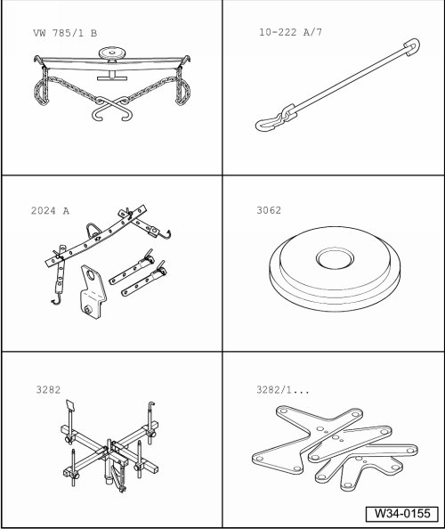
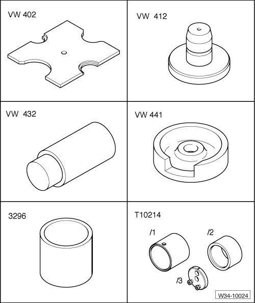
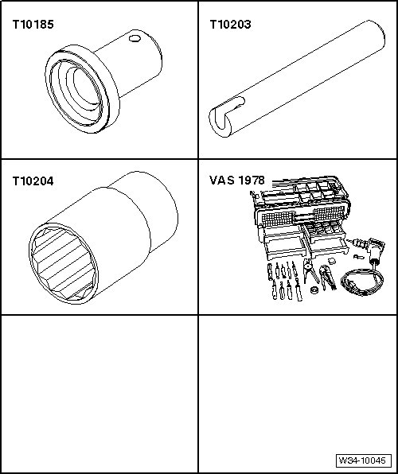
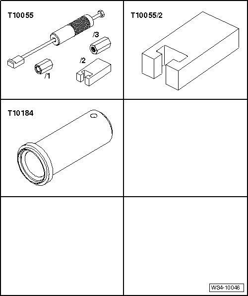

Controls, Housing
Special Tools
Special tools, testers and auxiliary items required
• Engine and transmission jack (VAG 1383 A) with universal transmission adapter (VAG 1359/2)
• Holding fixture (VW 313)
• Punch (VW 408 A)
• Engine and transmission holder (VW 540)
• Thrust pad (30 - 504)
• Tube (32 - 119)
• Kukko 17/2 Separating device
• Retainer (3145)

Special tools, testers and auxiliary items required
• Transmission support (VW 785/1B)
• Adapter (10 - 222 A /7)
• Lifting tackle (2024 A)
• Thrust pad (3062)
• Transmission support (3282)
• Adjustment plate (3282/37)

Special tools, testers and auxiliary items required
• Pressure plate (VW 402)
• Punch (VW 412)
• Thrust piece (VW 432)
• Base block (VW 441)
• Tube (3296)
• Alignment fixture (T10214)

Special tools, testers and auxiliary items required
• Thrust piece (T10185)
• Thrust piece (T10203)
• Socket (T10204)
• Wiring harness repair kit (VAS 1978)

Special tools, testers and auxiliary items required
• Puller (T10055)
• Adapter (T10055/2)
• Thrust piece (T10184)